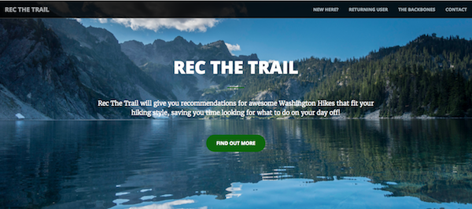

Rec the Trail is a capstone project completed for the Galvanize Data Science Immersive program I took during the summer of 2016.
The data was scraped from the Washington Trails Association using requests and BeautifulSoup. All subsequent analyzes were completed in Python using scikit-learn. Recthetrail.com is deployed using flask and AWS.
For more information on individual components of the project, check out the posts below:
Feel free to check out the project’s github repository.